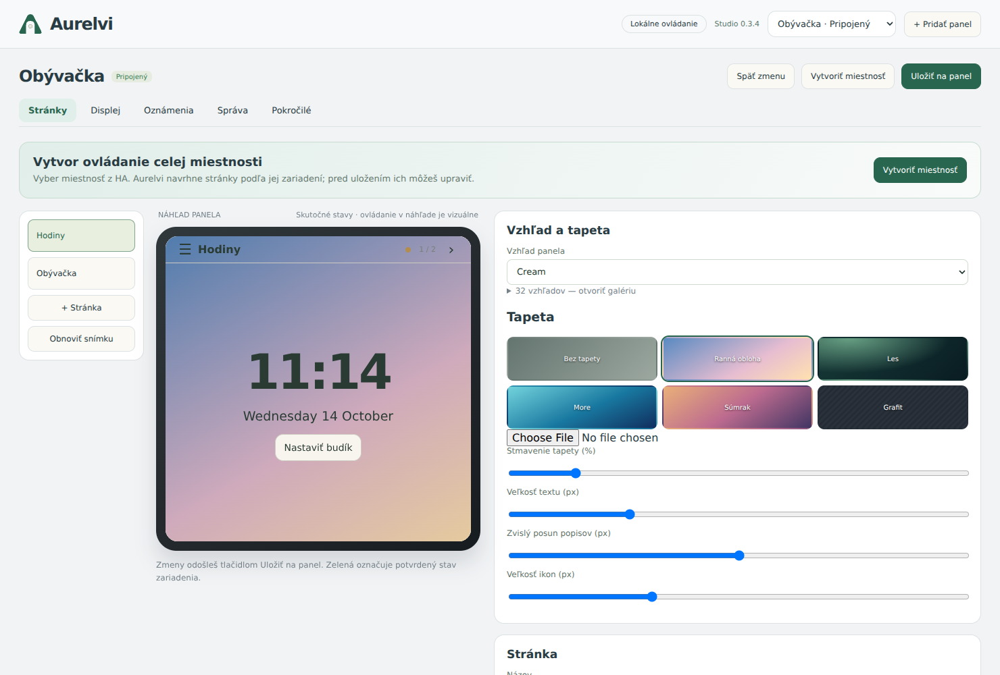

Living room
Four everyday controls. One clear overview.
Turn your wall panel into a calm, personal control centre. Lights, fans, weather and more — connected locally to Home Assistant.
Local MQTT · Visual editor · English & Slovak


Actual app screens with sample data. Tap any screen to see the details.
Four everyday controls. One clear overview.
An analogue face for the wall or screensaver.
Temperature, humidity and a five-day forecast.

Alarm status, PIN keypad and arming controls.

Camera selection and PTZ controls. Illustrated demo feed.

Playback controls and volume on the panel.
Fan speeds, light brightness and direction — with states confirmed by Home Assistant.
Choose an HA area. Build room creates an editable starting layout from its supported entities.
Choose from 80 skins, add a wallpaper and set a calmer look for the evening.
Pages on the left. Your preview in the middle. Every detail on the right. Build, arrange and customise your panel from Home Assistant — then send the saved layout to the device.

Start with one panel. Make it feel like yours.